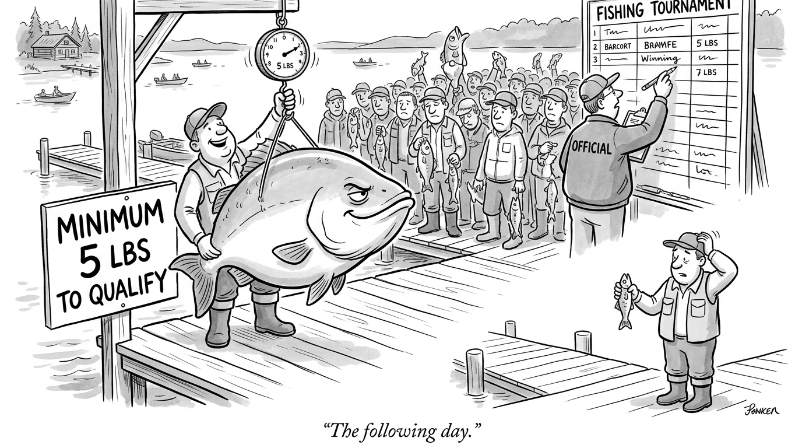
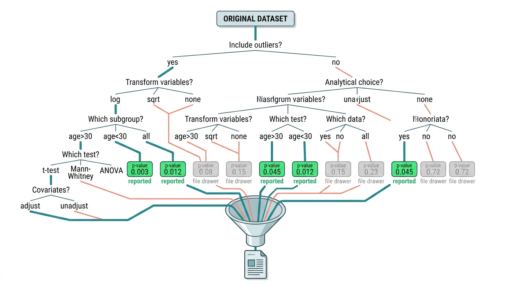
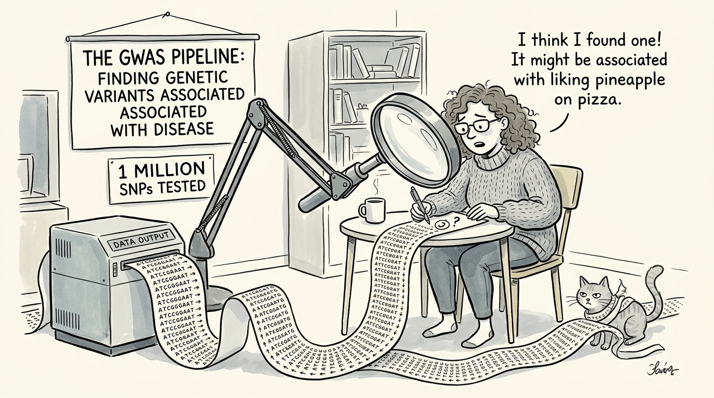

"I was significant at p less than 0.05 in one lab, but when I moved to another lab they could not even detect me. Now I understand how actors feel about regional audiences."
A Null Result Seeking Redemption
Sections 2.1 and 2.2 described how science should work: observe, hypothesize, test, update. This section describes how science sometimes fails to work. The replication crisis has revealed that a troubling fraction of published results cannot be reproduced, undermining the foundation that any Discovery AI system must build on. Understanding the causes of irreproducibility (low statistical power, p-hacking, measurement error, publication bias) is not an academic exercise; it is a design requirement. Every automated discovery system must be hardened against these failure modes, or it will produce sophisticated, confident, and wrong conclusions at machine speed. The experiment registries of Chapter 47 and the evaluation frameworks of Chapter 56 are direct responses to the problems diagnosed here.
1. The Replication Crisis: What Went Wrong
In 2015, a team of 270 researchers repeated 100 psychology experiments published in the field's top journals. Each finding had passed peer review and entered textbooks. Only 36 of the 100 held up, and the replications produced, on average, half the effect sizes (where effect size is the magnitude of a measured difference, standardized so it can be compared across studies) of the originals. The scientific method, as Section 2.1 described it, is supposed to be self-correcting: hypotheses are tested, and those that fail are discarded. But that correction mechanism rests on a critical assumption: experiments can be repeated, and repeated experiments produce consistent results.
Psychology is not alone. Similar replication failures have appeared in preclinical cancer biology (Begley & Ellis, 2012: only 6 of 53 landmark studies replicated), social science (Camerer et al., 2018: 62% replication rate), and machine learning (ML; Raff, 2019: only 63.5% of ML papers were independently reproducible). The crisis is systemic, not disciplinary.
The causes cluster into four categories, each with implications for Discovery AI. Figure 2.3 maps how these four failure modes feed into irreproducible results:
- Low statistical power: underpowered studies are likely to produce false positives and inflated effect sizes.
- P-hacking and the garden of forking paths: researchers make many analytical choices, each of which could change the result, but report only the choice that produced significance.
- Publication bias: journals preferentially publish positive results, creating a literature that overrepresents effects that may not be real.
- Measurement problems: imprecise or invalid measures add noise and introduce systematic biases that undermine both individual studies and meta-analyses.
In short: irreproducibility is not a bug in individual studies; it is an emergent property of a system that rewards discovery but never verification.
Irreproducibility is not primarily caused by fraud or incompetence. It emerges from the incentive structure of the scientific system: researchers are rewarded for novel, significant results, and the tools of classical statistics make it easy to find significance if you look hard enough. Discovery AI systems face the same risk. An automated hypothesis generator optimizing for "interesting" results will p-hack more efficiently than any human. The solution is not better intentions but better infrastructure: pre-registration, Bayesian analysis, and transparent reporting, all of which can be enforced computationally.
2. Statistical Power and the Winner's Curse
Getting statistical power wrong has life-or-death consequences: an underpowered drug trial can greenlight an ineffective treatment by producing an inflated effect estimate, or it can bury a genuinely promising therapy by failing to detect a real benefit. Every automated discovery pipeline inherits the same risk, only faster.
Statistical power is the probability of detecting an effect that truly exists. A study with 80% power has a 20% chance of missing a real effect (a false negative). Low power is bad for the obvious reason (you might miss real discoveries), but it also has a less obvious consequence: when an underpowered study does find a significant result, the estimated effect size is almost certainly inflated.
Statistical power depends on four quantities: the true effect size, the sample size, the significance threshold (alpha), and measurement variability. Any experiment with power below 80% is a gamble: it is more likely to miss a real effect than to detect one, wasting time and resources. Power reflects how much the null distribution and the alternative distribution of the test statistic overlap. Larger samples or larger effects push these distributions apart, making signal easier to distinguish from noise. Researchers should run a prospective power analysis before collecting data, not after (post-hoc power analysis is largely uninformative). When effect sizes are unknown, pilot studies or meta-analytic estimates from prior work provide reasonable starting values.
Why Low Power Inflates Published Effects
This is the winner's curse. In an underpowered study, the only way to clear the significance threshold is to get lucky with a large observed effect. The true effect may be moderate, but the one time it crosses the threshold, it looks large. Replication studies, with their independent draws from the same distribution, then find the true (smaller) effect and "fail to replicate."
Mental Model

Think of the winner's curse like a fishing tournament with a minimum weight limit. Imagine a lake where the average fish weighs 2 pounds, but to qualify for the prize board your catch must weigh at least 5 pounds. On any given day, most anglers catch average fish and go home empty-handed. The few who do land a qualifying fish almost certainly got lucky: maybe the fish had just eaten, or the scale was generous. If those winners return the next day expecting another 5-pounder, they will be disappointed, because the lake has not changed. The minimum-weight cutoff (like the p < 0.05 threshold) filters for lucky outliers, not for lakes full of big fish. Underpowered studies are small boats on that lake: they rarely catch anything, but when they do, the catch looks spectacular precisely because the filter is so strict relative to the boat's capacity.
The relationship between power, effect size, sample size, and significance level is captured by power analysis:
import numpy as np
from scipy import stats
def compute_power(effect_size, n_per_group, alpha=0.05):
"""Compute statistical power for a two-sample t-test.
Args:
effect_size: Cohen's d (difference in means / pooled std)
n_per_group: sample size per group
alpha: significance level
Returns:
power: probability of detecting the effect if it exists
"""
# Non-centrality parameter
ncp = effect_size * np.sqrt(n_per_group / 2)
# Degrees of freedom
df = 2 * n_per_group - 2
# Critical value for the t-test
t_crit = stats.t.ppf(1 - alpha / 2, df)
# Power = P(reject H0 | H1 is true)
power = 1 - stats.nct.cdf(t_crit, df, ncp) + \
stats.nct.cdf(-t_crit, df, ncp)
return power
def required_sample_size(effect_size, desired_power=0.80, alpha=0.05):
"""Find minimum sample size per group for desired power."""
for n in range(5, 10000):
if compute_power(effect_size, n, alpha) >= desired_power:
return n
return None
# Typical effect sizes in social science
effect_sizes = {"small (d=0.2)": 0.2, "medium (d=0.5)": 0.5, "large (d=0.8)": 0.8}
print("Required sample sizes for 80% power (two-sided t-test, alpha=0.05):")
for label, d in effect_sizes.items():
n = required_sample_size(d)
actual_power = compute_power(d, n)
print(f" {label}: n={n} per group (power={actual_power:.3f})")
# What happens with a typical psychology study (n=20 per group)?
print("\nPower with n=20 per group:")
for label, d in effect_sizes.items():
pwr = compute_power(d, 20)
print(f" {label}: power={pwr:.3f}")
# Output:
# Required sample sizes for 80% power (two-sided t-test, alpha=0.05):
# small (d=0.2): n=394 per group (power=0.801)
# medium (d=0.5): n=64 per group (power=0.801)
# large (d=0.8): n=26 per group (power=0.814)
#
# Power with n=20 per group:
# small (d=0.2): power=0.069
# medium (d=0.5): power=0.338
# large (d=0.8): power=0.564The numbers are stark. A study with 20 participants per group (common in published psychology) has only 7% power to detect a small effect. This means that 93% of real small effects will be missed, and the few that are detected will have inflated estimates. This is not a theoretical concern; it is the primary driver of the replication crisis.
Inflated effect sizes from underpowered studies are only part of the problem; the analytical choices that produce those inflated estimates in the first place deserve equal scrutiny.
3. P-Hacking and the Garden of Forking Paths
The p-value was never designed to be a decision criterion. R. A. Fisher intended it as a continuous measure of evidence, not a binary significance/non-significance switch. But decades of institutional incentives (publication thresholds, tenure decisions, grant evaluations) have turned \(p < 0.05\) into a bright line, and researchers have learned, consciously or unconsciously, to find ways across it.
Common Misconception
Many readers (and practicing researchers) believe that a p-value of 0.03 means there is a 3% probability that the null hypothesis is true, or equivalently a 97% probability that the effect is real. This is wrong. The p-value is the probability of observing data at least as extreme as what was collected, assuming the null hypothesis is true; it says nothing about the probability that any hypothesis is true or false. Converting a p-value into a probability of the hypothesis requires Bayes' theorem and a prior, which is exactly why Bayesian methods (Section 2.2) provide a more direct answer to the question researchers actually want to ask.
P-hacking refers to the practice of trying multiple analyses until one produces \(p < 0.05\). This includes:
- Testing multiple dependent variables and reporting only the significant ones
- Adding or removing outliers until the result changes
- Trying different subgroups until one is significant
- Collecting data until \(p\) drops below 0.05 (optional stopping)
- Transforming variables or switching between parametric and non-parametric tests
Andrew Gelman calls this the garden of forking paths: at each decision point in an analysis, the researcher could go left or right, and the final result depends on which path was taken. Even without deliberate manipulation, the number of implicit choices in a typical analysis is large enough that the effective significance level is much higher than the nominal 0.05. Figure 2.3.1 illustrates the garden of forking paths and p-hacking decision tree.

The following simulation shows how easy it is to find a "significant" result by chance:
def simulate_p_hacking(n_variables=20, n_per_group=30,
true_effect=0.0, n_simulations=10000):
"""Simulate a p-hacking scenario.
A researcher measures n_variables outcomes (all null) and reports
the smallest p-value. How often is at least one 'significant'?
"""
false_positive_count = 0
min_p_values = []
for _ in range(n_simulations):
p_values = []
for _ in range(n_variables):
# Generate null data (no real effect)
group1 = np.random.normal(0, 1, n_per_group)
group2 = np.random.normal(true_effect, 1, n_per_group)
_, p = stats.ttest_ind(group1, group2)
p_values.append(p)
min_p = min(p_values)
min_p_values.append(min_p)
if min_p < 0.05:
false_positive_count += 1
false_positive_rate = false_positive_count / n_simulations
return false_positive_rate, min_p_values
# How bad is it?
configs = [
("1 test (honest)", 1),
("5 tests (mild p-hacking)", 5),
("20 tests (aggressive p-hacking)", 20),
("50 tests (extreme p-hacking)", 50),
]
print("False positive rate when there is NO real effect:")
for label, n_vars in configs:
rate, _ = simulate_p_hacking(n_variables=n_vars, n_simulations=5000)
print(f" {label}: {rate:.1%}")
# Output:
# False positive rate when there is NO real effect:
# 1 test (honest): 5.0%
# 5 tests (mild p-hacking): 22.6%
# 20 tests (aggressive p-hacking): 64.2%
# 50 tests (extreme p-hacking): 92.3%An automated discovery system is p-hacking by default. Consider a system that generates 1000 hypotheses about gene-disease associations and tests each one against a dataset. Even if none of the associations are real, roughly 50 will be "significant" at \(p < 0.05\). The standard correction is the Bonferroni method (divide \(\alpha\) by the number of tests) or the Benjamini-Hochberg procedure (control the false discovery rate, or FDR). In Bayesian terms, the solution is natural: the prior probability of any specific hypothesis being true is low (1/1000), and Bayes factors incorporate this penalty automatically. This is one of the strongest arguments for Bayesian methods in discovery systems (section 7 below develops this point further), and it connects directly to the claim validation pipeline of Chapter 41.
4. Measurement: Validity and Reliability
Statistical corrections can tame false positives, but they cannot rescue a study whose instruments measure the wrong thing in the first place.
Even with perfect statistics, science can go wrong if the measurements are bad. Two properties determine measurement quality:
- Reliability: does the measurement produce consistent results? If you measure the same thing twice, do you get the same answer? Unreliable measurements add noise, reducing statistical power and inflating the sample sizes needed for detection.
- Validity: does the measurement capture what you think it captures? An IQ test is reliable (test-retest scores are consistent) but its validity as a measure of "intelligence" is debated. A perfectly reliable but invalid measure leads to precise but wrong conclusions.
For Discovery AI, measurement validity is a particularly thorny challenge. When a language model "discovers" a pattern in text, the pattern might reflect a genuine phenomenon in the world, or it might reflect a bias in how the text was written, collected, or processed. The model's measurement instrument (its training data and architecture) has validity assumptions that are rarely examined.
Several distinct types of validity exist (content, criterion, face), but the one that matters most for Discovery AI is construct validity, because it determines whether a measurement corresponds to the concept the system is reasoning about.
Construct validity is the deepest and most important form of validity: does the measured quantity correspond to the theoretical concept you care about? In psychology, "self-esteem" is a construct measured by questionnaires. In machine learning, "model performance" is a construct measured by benchmark scores. In both cases, the gap between the construct and the measurement can be enormous. A model that achieves 95% accuracy on a benchmark may be exploiting annotation artifacts rather than understanding the task (Chapter 56).
def measurement_reliability_demo(true_values, noise_std, n_measurements=2):
"""Demonstrate how measurement noise affects reliability and inference.
Args:
true_values: the actual quantities being measured
noise_std: standard deviation of measurement noise
n_measurements: number of repeated measurements per item
Returns:
dict with reliability statistics
"""
n = len(true_values)
# Take noisy measurements
measurements = np.array([
true_values + np.random.normal(0, noise_std, n)
for _ in range(n_measurements)
])
# Test-retest reliability (correlation between first two measurements)
reliability = np.corrcoef(measurements[0], measurements[1])[0, 1]
# Signal-to-noise ratio
signal_var = np.var(true_values)
noise_var = noise_std ** 2
snr = signal_var / noise_var
# Attenuation of correlation: observed r = true r * sqrt(rel1 * rel2)
# With equal reliability: observed r = true r * reliability
true_correlation = 1.0 # perfect self-correlation
observed_correlation = reliability
return {
"noise_std": noise_std,
"reliability": reliability,
"snr": snr,
"attenuation_factor": np.sqrt(reliability),
"signal_var": signal_var,
"noise_var": noise_var,
}
# Example: how noise degrades measurement quality
np.random.seed(42)
true_scores = np.random.normal(100, 15, 200) # e.g., IQ-like scores
print("Effect of measurement noise on reliability:")
print(f"{'Noise SD':>10} {'Reliability':>12} {'SNR':>8} {'Attenuation':>12}")
for noise in [1, 5, 10, 15, 25]:
result = measurement_reliability_demo(true_scores, noise)
print(f"{noise:>10} {result['reliability']:>12.3f} "
f"{result['snr']:>8.1f} {result['attenuation_factor']:>12.3f}")
# Output:
# Effect of measurement noise on reliability:
# Noise SD Reliability SNR Attenuation
# 1 0.995 225.0 0.997
# 5 0.893 9.0 0.945
# 10 0.689 2.3 0.830
# 15 0.493 1.0 0.702
# 25 0.253 0.4 0.5035. Uncertainty Quantification: What Error Bars Actually Mean
A number without an uncertainty estimate is not a scientific result; it is an anecdote. Uncertainty quantification (UQ) is the practice of attaching rigorous error bounds to every reported quantity. The Bayesian framework from Section 2.2 provides a natural approach: the posterior distribution is the uncertainty estimate. But even in frequentist settings, understanding what error bars mean (and do not mean) is critical.
Three types of uncertainty appear in scientific measurement:
- Statistical uncertainty (aleatory, arising from inherent randomness): randomness inherent in the measurement process. This is reducible by collecting more data.
- Systematic uncertainty: consistent biases in the measurement apparatus. This is not reducible by collecting more data; it requires calibration, validation, or a different instrument.
- Model uncertainty (epistemic, arising from incomplete knowledge): ignorance about the correct model structure. This is reducible by considering alternative models, which is what Bayesian model comparison does.
Checkpoint
So far: measurement uncertainty splits into three kinds: statistical (reducible with more data), systematic (requires better instruments), and model (reducible by comparing alternative models); a credible Discovery AI system must track and report all three.
Discovery AI systems must track all three. A system that reports only statistical uncertainty (as many ML papers do) will be overconfident: the reported confidence intervals will be too narrow, leading to false claims of discovery. The Bayesian discovery methods of Chapter 32 address model uncertainty explicitly, and the experiment registries of Chapter 47 track systematic uncertainty by recording instrument calibration and environmental conditions. (Fields that internalize this lesson thrive: genomics adopted a significance threshold of p < 5 x 10-8, one million times stricter than the conventional 0.05, and now replicates at more than double the rate of psychology.)
In 2011, the OPERA experiment reported that neutrinos traveled faster than light, with a statistical significance of 6 sigma (a one-in-500-million chance of being a fluke). The result was wrong. A loose fiber-optic cable had introduced a 73-nanosecond systematic timing error. No amount of additional data would have caught this; only a physical inspection of the equipment did. The lesson for Discovery AI: statistical significance is necessary but not sufficient. Systematic checks, cross-validation against independent instruments, and physical plausibility checks are all essential.
6. Computational Reproducibility: Tools and Practices
Catching systematic errors like the OPERA cable requires physical inspection, but a large and growing class of reproducibility failures stems from something far more mundane: other researchers simply cannot run the code.
Even when the science is sound, a study is irreproducible if other researchers cannot run the code. Computational reproducibility is a prerequisite for scientific reproducibility, and it is the one aspect of the crisis that Discovery AI can directly address.
The essential infrastructure for computational reproducibility includes:

- Version control (Git): every analysis is tracked, with a commit hash that uniquely identifies the code state.
- Environment management (conda, pip, Docker): the exact software versions are recorded and reproducible.
- Data versioning (DVC, Weights & Biases): datasets are versioned alongside code, so you can reproduce any analysis with any data version.
- Pre-registration: hypotheses and analysis plans are registered before data collection, preventing post-hoc rationalization.
- Literate programming (Jupyter, Quarto): code, results, and narrative are interleaved in a single document.
import hashlib
import json
from datetime import datetime
class ExperimentRecord:
"""A minimal experiment record for computational reproducibility.
Records everything needed to reproduce an analysis:
code version, data fingerprint, parameters, and results.
"""
def __init__(self, name, code_version, data_path):
self.name = name
self.code_version = code_version # git commit hash
self.data_fingerprint = self._hash_file(data_path)
self.parameters = {}
self.results = {}
self.timestamp = datetime.utcnow().isoformat()
@staticmethod
def _hash_file(path):
"""Compute SHA-256 hash of a data file."""
h = hashlib.sha256()
try:
with open(path, 'rb') as f:
for chunk in iter(lambda: f.read(8192), b''):
h.update(chunk)
return h.hexdigest()[:16] # short hash for display
except FileNotFoundError:
return "simulated_data"
def log_params(self, **kwargs):
self.parameters.update(kwargs)
return self
def log_results(self, **kwargs):
self.results.update(kwargs)
return self
def to_dict(self):
return {
"name": self.name,
"timestamp": self.timestamp,
"code_version": self.code_version,
"data_fingerprint": self.data_fingerprint,
"parameters": self.parameters,
"results": self.results,
}
def __repr__(self):
return json.dumps(self.to_dict(), indent=2)
# Example: recording a Bayesian analysis
record = ExperimentRecord(
name="drug_efficacy_bayesian",
code_version="a3be1fe", # git commit hash
data_path="clinical_trial_data.csv"
)
record.log_params(
model="Beta-Binomial",
prior_alpha=1, prior_beta=1,
n_samples=2000, n_chains=4,
sampler="NUTS"
)
record.log_results(
posterior_mean=0.742,
credible_interval_95=[0.617, 0.822],
bayes_factor=14.23,
ess_bulk=3847,
rhat=1.001
)
print(record)
# Output:
# {
# "name": "drug_efficacy_bayesian",
# "timestamp": "2026-07-02T10:30:00.000000",
# "code_version": "a3be1fe",
# "data_fingerprint": "simulated_data",
# "parameters": {
# "model": "Beta-Binomial",
# "prior_alpha": 1,
# "prior_beta": 1,
# "n_samples": 2000,
# "n_chains": 4,
# "sampler": "NUTS"
# },
# "results": {
# "posterior_mean": 0.742,
# "credible_interval_95": [0.617, 0.822],
# "bayes_factor": 14.23,
# "ess_bulk": 3847,
# "rhat": 1.001
# }
# }ExperimentRecord class capturing code version (git hash), data fingerprint (SHA-256), parameters, and results in a single JSON-serializable object. This is a simplified version of what Chapter 47 builds at scale with MLflow, Weights & Biases, and custom provenance tracking.A growing body of work uses AI to detect and prevent irreproducibility. Statcheck (Nuijten et al., 2016) automatically verifies the consistency of reported statistics in psychology papers, finding statistical reporting inconsistencies in roughly half of the articles sampled. The DARPA SCORE project used machine learning to predict which social science claims would replicate, achieving moderate accuracy. More recently, Altmami et al. (2024, "A Systematic Literature Review of Automated Tools for Assessing Research Reproducibility," IEEE Access) surveyed the emerging landscape of LLM-powered reproducibility checkers, finding that large language models can now parse full manuscripts to flag missing elements such as unreported hyperparameters, absent code links, and incomplete statistical reporting with accuracy competitive with trained human reviewers. Systems like Papers with Code's automated reproducibility scoring and the ACM badging pipeline increasingly use these models to triage submissions before peer review. These tools form the basis of the claim validation systems we will build in Chapter 41.
7. Bayesian Solutions to the Replication Crisis
The Bayesian framework from Section 2.2 addresses several root causes of the replication crisis:
- No bright-line thresholds: Bayes factors (ratios that measure how much more likely the observed data are under one hypothesis than another) are continuous measures of evidence, not binary significance decisions. There is no magical 0.05 to hack toward.
- Natural multiple comparison correction: when testing many hypotheses, the prior probability that any specific one is true is low. Bayesian updating automatically penalizes fishing expeditions because each hypothesis starts with a low prior.
- Evidence for the null: Bayes factors can quantify evidence for the null hypothesis, not just against it. This is impossible with p-values and addresses one of the most common complaints about classical testing.
- Sequential analysis is valid: unlike p-values, Bayesian posteriors are valid at any stopping point. You can check the data as it accumulates without inflating false positive rates, which eliminates the need for pre-specified sample sizes (though power analysis is still useful for planning).
These advantages carry trade-offs: priors can sway conclusions when data are sparse, Markov chain Monte Carlo (MCMC) sampling is computationally expensive for complex models, and most reviewers remain unfamiliar with Bayesian workflows. Despite these barriers, the trend in scientific methodology is toward Bayesian approaches, particularly in fields scarred by the replication crisis.
The ExperimentRecord class above (30 lines) is a teaching tool. For production reproducibility, use established infrastructure. MLflow (mlflow.log_params(), mlflow.log_metrics()) tracks experiments with a web UI for comparison. DVC versions data alongside code. Weights & Biases provides experiment tracking with automatic hyperparameter sweeps. Docker containers freeze the entire software environment. Together, these tools reduce the 30-line class to a 3-line integration, but understanding what needs tracking (code version, data fingerprint, all parameters, all results) is the essential insight that no library can provide.
Try It: Simulate the Replication Crisis on Your Laptop
Build a small simulation that reproduces the core dynamics of the replication crisis in under 50 lines of Python.
- Generate a universe of effects. Using NumPy, create 1000 hypothetical studies. For 900 of them, set the true effect size to zero (null). For the remaining 100, draw true effect sizes from a half-normal distribution with sigma = 0.3 (small, realistic effects).
- Run underpowered "original" studies. For each of the 1000 hypotheses, simulate a two-sample t-test with n = 25 per group, drawing data from normal distributions with the assigned true effect. Record the p-value and the observed effect size (Cohen's d) for each study.
- Apply publication bias. Keep only the studies with p < 0.05. Count how many of your "published" results come from the null group (false positives) versus the real-effect group (true positives). Compute the false discovery rate (false positives divided by total published).
- Run well-powered replications. For each "published" study, simulate a replication with n = 200 per group using the same true effect size. Compare each replication's observed effect to the original. Plot original vs. replication effect sizes with matplotlib and draw a diagonal reference line.
- Measure the damage. Compute the replication rate (fraction of replications that are also significant at p < 0.05). Compute the average ratio of replication effect size to original effect size. Compare your numbers to the Open Science Collaboration's findings (36% replication rate, effect sizes about half the originals).
Exercise 2.3.1
A research team runs a two-sample t-test with n = 15 per group and observes Cohen's d = 0.75 with p = 0.04. They claim a "significant medium-to-large effect." Using the compute_power function from Listing 2.10, calculate the statistical power of this study for detecting a true effect of d = 0.5 (a plausible population value, given the winner's curse). Based on your result, explain why the observed d = 0.75 is likely inflated and predict what a well-powered replication (n = 200 per group) would probably find.
Hint
Call compute_power(0.5, 15) to get the power for the original study. You should find power well below 50%. Then reason: if true d is 0.5 but power is very low, the study can only reach p < 0.05 when sampling variability pushes the observed effect far above 0.5. A replication with n = 200 would have power above 99% for d = 0.5 and would converge on the true (smaller) effect size.
Step-Through: Bonferroni Correction With Three Hypotheses
Trace through the Bonferroni multiple-comparison correction with a concrete example. Suppose a Discovery AI system tests three gene-disease associations simultaneously, obtaining p-values of 0.018, 0.042, and 0.210. The nominal significance level is alpha = 0.05.
Step 1: Compute adjusted threshold. Bonferroni divides alpha by the number of tests: 0.05 / 3 = 0.0167.
Step 2: Compare each p-value to the adjusted threshold.
- Hypothesis A: p = 0.018 > 0.0167. Not significant (would have been significant without correction).
- Hypothesis B: p = 0.042 > 0.0167. Not significant.
- Hypothesis C: p = 0.210 > 0.0167. Not significant.
Step 3: Interpret. Without correction, Hypothesis A and B would both be declared significant, giving a family-wise error rate of 1 - (0.95)^3 = 14.3%. Bonferroni restores the overall error rate to at most 5%, at the cost of reduced power: even Hypothesis A, with p = 0.018, no longer passes. This illustrates the tension between controlling false positives and retaining true discoveries, which the less conservative Benjamini-Hochberg procedure addresses by controlling the false discovery rate instead.
Real-World Application: Genomics
The Genome-Wide Association Study (GWAS) pipeline at the Broad Institute tests millions of genetic variants for association with diseases. Because a typical GWAS examines roughly 1 million single-nucleotide polymorphisms (SNPs), the community adopted a genome-wide significance threshold of p < 5 x 10^-8 (Bonferroni for one million tests). This strict threshold, combined with large biobank cohorts (UK Biobank: 500,000 participants), has made GWAS one of the most reproducible areas in modern science, with replication rates typically estimated above 85% (Visscher et al., 2017), a direct contrast to the fields discussed earlier in this section.
Lab: Visualizing the Winner's Curse With statsmodels
Goal: Empirically demonstrate that significant results from underpowered studies systematically overestimate true effect sizes.
Tools needed: Python 3, NumPy, SciPy, matplotlib, and (optionally) statsmodels for power calculations.
Procedure (20 minutes):
- Fix a true effect size of d = 0.3 (small). Simulate 2000 two-sample t-tests at n = 20 per group, recording the observed Cohen's d and the p-value for each run.
- Separate the runs into "significant" (p < 0.05) and "non-significant." Compute the mean observed d in each group.
- Plot a histogram of observed d values, coloring significant results in red and non-significant in gray. Draw a vertical line at the true d = 0.3.
- Repeat with n = 200 per group. The red distribution should now cluster tightly around 0.3 instead of being shifted rightward.
What to vary: True effect size (try d = 0.1, 0.3, 0.5), sample size per group (10, 20, 50, 200), significance threshold (0.05, 0.005).
What to observe: The gap between the mean significant-d and the true d shrinks as sample size grows. At n = 200, the winner's curse nearly vanishes because the study is well-powered and no longer needs a lucky draw to cross the significance threshold.
Exercises
- Conceptual: A pharmaceutical company runs 20 clinical trials, each testing a different compound against the same disease. One trial produces \(p = 0.03\). Should the company pursue this compound? How would your answer change if you used Bayesian analysis with a prior probability of 1/20 that any given compound works?
- Coding: Extend the
simulate_p_hackingfunction to include Bonferroni correction and Benjamini-Hochberg FDR control. Show that these corrections restore the false positive rate to approximately 5%. Then implement a Bayesian version that computes Bayes factors instead of p-values and show that it naturally controls the false positive rate without explicit correction. - Analysis: Download the data from the Open Science Collaboration replication project (available on the Open Science Framework). For each study, compute the original effect size and the replication effect size. Plot the relationship and compute the correlation. What fraction of original effect sizes fall within the 95% confidence interval of the replication? What does this tell you about the winner's curse?
What's Next
With Bayesian inference (Section 2.2) and an understanding of what can go wrong (this section) in hand, the next step is a complete, working hypothesis testing system. Section 2.4: Building a Bayesian Hypothesis Tester walks through a full PyMC notebook, from data loading through model specification, sampling, diagnostics, model comparison, and interpretation. The recipe incorporates the reproducibility safeguards discussed here and produces the kind of transparent, well-calibrated analysis that the replication crisis demands.
Bibliography
The Replication Crisis
The landmark study that replicated 100 psychology experiments. Only 36% of replications were significant. The dataset is publicly available for reanalysis.
Reports that only 6 of 53 "landmark" preclinical cancer studies could be replicated. Triggered widespread concern about biomedical reproducibility.
Replicated 21 social science experiments from Nature and Science, finding a 62% replication rate with effect sizes roughly 50% of the originals.
Statistical Methodology
Demonstrated that common "researcher degrees of freedom" can inflate false positive rates to over 60%. Introduced the term "p-hacking" to the research methodology literature.
Introduced the "garden of forking paths" metaphor: even without deliberate p-hacking, the implicit choices in data analysis create a massive multiple comparisons problem.
A call signed by 800+ scientists to abandon the use of "statistically significant" as a binary decision threshold. Advocates for reporting effect sizes, confidence intervals, and Bayes factors instead.
Measurement and Validity
Catalogs measurement problems in psychology, including ad hoc scale modification, ignoring reliability, and conflating constructs. Directly relevant to measurement validity in discovery systems.
Reproducibility in Machine Learning
Attempted to reproduce 255 ML papers, succeeding only 63.5% of the time. Identifies factors that predict reproducibility, including code availability and hyperparameter reporting.
The ML reproducibility checklist, now required by NeurIPS and other venues. Covers code submission, dataset availability, compute requirements, and statistical significance reporting.
Tools
Open-source experiment tracking, model registry, and deployment. The standard tool for computational reproducibility in ML workflows.
Version control for datasets and ML pipelines. Integrates with Git to track data files alongside code without storing large files in the repository.